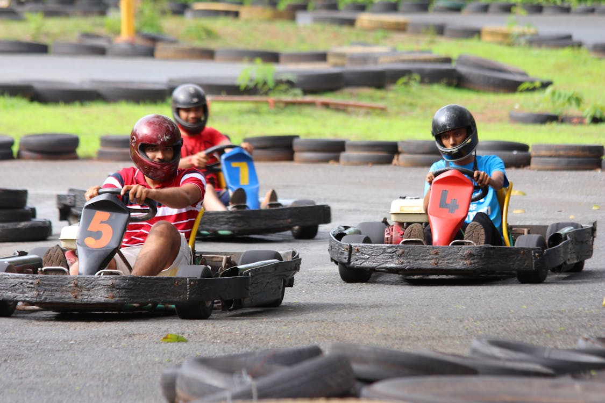

Looking for an unforgettable adventure that gets your adrenaline pumping? Welcome to Chaos Racing's Simulators — the ultimate destination for speed lovers and adrenaline seekers! Now, you can step into the driver’s seat and race through immersive tracks designed to test your skills and get your heart racing. Whether you're a pro or a rookie, young or old, feel the thrill of go-kart racing like never before! Travel the world with track models from The Americas, Europe and Asia. All featuring trilling straightaways, high-speed turns, and real-time interactive competition that allows you to battle it out with friends for first place or just have a fun, action-packed adventure that keeps you on the edge of your seat. Designed to mimic the real-world dynamics and physics of go-kart racing, feel every turn, bump, and rush of speed with our immersive simulators deliver a real racing experience that’s next best thing as getting on an actual track as you can get without breaking the bank! Get ready to rev up your engines and experience the heart-pounding excitement felt in every turn, bump, and rush of speed with our immersive go-kart racing simulation. Challenge your friends, family, or fellow racers to see who can claim the win at the checkered flag. It’s fast-paced fun with bragging rights on the line!
Go Racing
Sim

Go Racing
Track